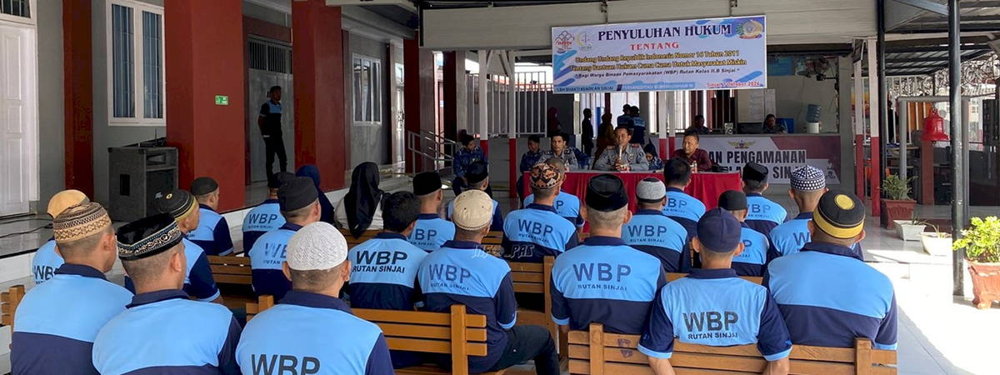
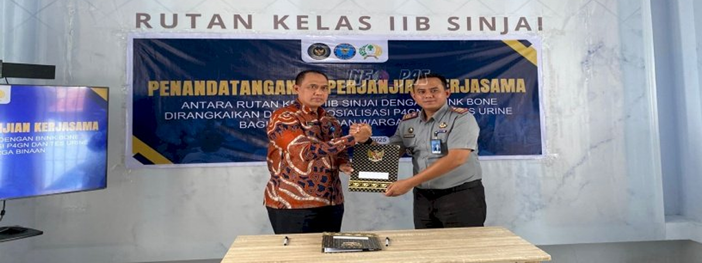

Berita Utama
GANDENG LBH BAKTI KEADILAN, RUTAN SINJAI FASILITASI TAHANAN DAPATKAN BANTUAN HUKUM
Rutan Kelas IIB Sinjai | Oct 7, 2024

Berita Utama
RUTAN SINJAI DAN BNNK BONE SEPAKATI KERJA SAMA DAN GELAR SOSIALISASI P4GN
Rutan Kelas IIB Sinjai | Oct 8, 2024